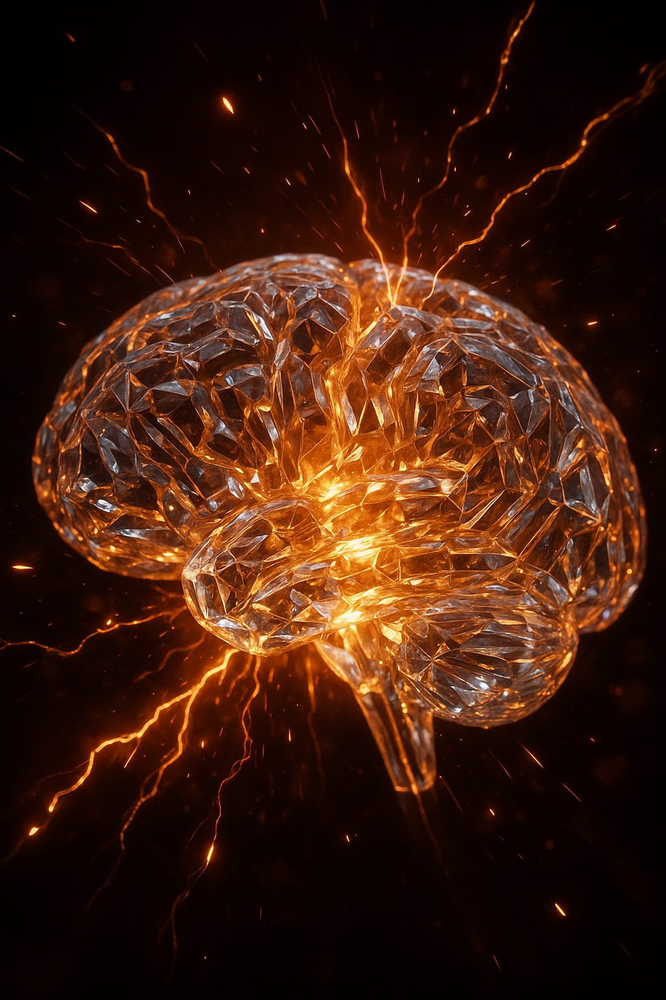

Causality: A Law of Knowledge in a Predictive Universe
Abstract
Causality is typically understood as a geometric constraint on physical influence, enforced by the invariant speed of light. The Predictive Universe (PU) framework recasts causality as a more fundamental principle of informational and logical integrity. It argues that causality is a logical necessity for any reality capable of supporting predictive agents, as paradoxes would render knowledge impossible. This logical necessity is then physically enforced by a multi-layered system of constraints that limit what physical systems can do and, more deeply, what they can know. These enforcement mechanisms include the emergent speed of light, a fundamental logical limit on self-prediction, and the divergent thermodynamic costs of approaching that limit. Causality, in this view, is the universe's robust strategy for protecting its own narrative coherence, ensuring it remains a knowable, predictable system.
Causality in Plain Terms
Bank fraud is prevented three ways at once. The vault has a lock, staff are not told the codes they would need, and moving enough money to matter leaves a trail that costs more to hide than the money is worth. Any one of those could be beaten. Together they hold.
Causal order is protected the same way, on this account, and the layers are worth separating. The first is the familiar speed limit: influence propagates no faster than a bound set by how quickly the underlying network can update, which is what the speed of light measures. The second is about knowing rather than doing. Building a paradox takes reliable advance knowledge of what you are about to do, and a system that receives a forecast about itself can act against it, so no forecaster is right about every such system. The third is price. You can approach that limit without reaching it, and the work needed grows faster than the gap shrinks, so the last stretch costs more than any finite budget covers.
The layers answer different objections. The speed limit alone leaves the question of why a universe should have one. The logical limit alone leaves open how close a determined system could get. The cost answer closes that, and none of the three requires the others to be true.
1. Introduction
Intuitive causality rests on a simple premise: effects follow causes. A billiard ball moves only after it is struck. In modern physics the principle is formalized by the structure of spacetime, following Einstein (1905), where the speed of light c defines a light cone - a boundary separating the events that can influence us from those that cannot. This geometric view successfully prevents physical paradoxes, like an effect preceding its cause. However, it leaves a deeper question unanswered: Why is reality structured this way? Why does the universe go to such lengths to forbid paradoxes?
The Predictive Universe (PU) framework treats causality as a principle of epistemology before it is a rule for matter: a constraint on what can be known, which a world has to enforce physically if it is to contain systems that predict and learn.
Universe 00110000
2. Layer 1: The Logical Necessity of Causality for Prediction
2.1 A Universe Without Causality is Unknowable
The PU framework is built upon the operational logic of prediction. For a system to predict, it must be able to learn from the past to anticipate the future. This requires two non-negotiable conditions:
- A Directed Flow of Time: A clear distinction between past (data source) and future (prediction target).
- A Stable Causal Structure: The rules connecting past causes to future effects must be consistent and discoverable.
A universe without enforced causality, where a message could reach your past self and prevent your own birth, would be a universe of logical chaos. Such solutions are not excluded by general relativity alone, as Gödel (1949) showed by constructing a spacetime with closed timelike curves, and Hawking's (1992) chronology protection conjecture proposes that quantum effects prevent their formation. In such a reality, the relationship between action and consequence would be unstable. Learning would be impossible, as the "lessons" of the past could be retroactively invalidated. The very ground upon which knowledge is built would crumble. Therefore, for a universe to contain predictive agents (and thus, to be knowable), it must be structured to prevent such paradoxes. Causality is a logical prerequisite for a predictable existence. The formal machinery for reasoning about interventions and their consequences, which the argument here presupposes, is the one Pearl (2009) set out, and MacKay (1960) gave the parallel point for agents told their own futures.
3. Layer 2: The Physical Enforcement of Causality
The universe does not rely on a logical preference for coherence. The Predictive Universe framework describes a multi-layered physical enforcement of causality through limits on action, knowledge, and resource expenditure.
3.1 The "Hardware" Limit: The Speed of Light (c)
This is the familiar barrier. On the emergent-spacetime branch, finite update time and finite interaction cost in the underlying predictive network supply a uniform upper bound on operational causal speed, written c. It bounds the rate at which physical influence, modeled as one `Evolve` event triggering another, can propagate through the network. Reading that bound as an attained frontier with Lorentzian local kinematics requires the separate promotion branch.
3.2 The "Software" Limit: The Prediction Coherence Boundary (αSPAP)
The second limit is about knowledge rather than motion. The Self-Referential Paradox of Accurate Prediction (SPAP) proves that within a class of predictors rich enough to build a system acting against its own forecast, no predictor in that class is correct across the class. Restricted systems stay predictable, and what fails is the universal guarantee. The coordinate αSPAP marks that limit for a registered task and score, and it is defined only once a task, a score, and a certificate are fixed.
This acts as a logical firewall. To create a causal paradox, an agent would need to acquire perfect foreknowledge of an event to then act to prevent it. The paradox construction is exactly the case the theorem excludes, since an agent acting to prevent what it foresees is a system acting against a forecast about itself. Guaranteed foreknowledge of that kind has no consistent value.
3.3 The Economic Barrier: The Thermodynamic Cost of Knowledge
To make the logical firewall physically robust, the universe enforces it with thermodynamics. While you cannot reach the SPAP boundary, you can try to get close. The PU framework shows that the cost of doing so is prohibitive:
- The verification and update work required to close the remaining gap to the `α_SPAP` boundary carries a log-enhanced quadratic lower bound, and that bound transfers to Predictive Physical Complexity (`C_P`) when the chosen complexity notion lower-bounds those operations.
- This complexity has a physical resource cost, and every irreversible step in it carries the erasure floor Landauer (1961) established, so the energy required to approach perfect foreknowledge grows without bound.
This is the thermodynamic enforcement of causality. Approaching the knowledge state required for a paradox faces divergent resource costs, so guaranteed paradox-enabling foreknowledge is physically unavailable.

Universe 00110000
4. The Thermodynamic Accounting of Meaning
The thermodynamic enforcement connects knowledge, energy, and meaning. The economic limit is clearest in the physical cost of a single, fundamental act of knowing, as detailed in our exploration of Predictive Landscape Semantics.
Predictive Landscape Semantics defines meaning functionally as a quantifiable improvement in predictive
quality
(ΔQ). Within the Predictive Universe framework, this informational event is not abstract; it is
a physical
process with a rigorous thermodynamic accounting. A significant ΔQ event - a moment of insight or
coherence - represents a successful and efficient solution to a component of the Prediction Optimization
Problem
(POP), and its physical signature can be understood through the lens of the framework's core cost
functions.
The process of achieving meaning unfolds in three thermodynamically distinct stages:
- Pre-Coherence (High Cost State): Before receiving meaningful information, the system operates with a sub-optimal predictive model. This state is characterized by high uncertainty, which necessitates a higher Predictive Physical Complexity (`C_P`) to manage. According to the framework's cost functions (`R(C)` and `R_I(C)`), maintaining this high-complexity, low-certainty state incurs a significant ongoing power cost. The system is in a state of poor resource allocation for its POP - it is spending significant energy for a low predictive return.
- The `ΔQ` Event (Informational Collapse and Heat Dissipation): A resonant informational
pattern `s` is
received - one with high Compression Efficiency (CE = MP/SC). The system recognizes it
can improve
its predictive model. This update is a physical act of computation that involves two key thermodynamic
events:
- Uncertainty Collapse: The system updates its belief state, erasing a vast number of incorrect or less-likely hypotheses. This is a logically irreversible act of information erasure.
- Thermodynamic Cost: According to Landauer's Principle, applied here to a registered cyclic reset of the record, this erasure of logical information is not free. It is a physical process that must be accompanied by the dissipation of a minimum amount of heat into the environment. The magnitude of this heat dissipation (`ΔS_thermo > 0`) is directly related to the amount of uncertainty (Shannon entropy) that was collapsed. This is the irreducible thermodynamic cost of achieving clarity.
- Post-Coherence (High Efficiency State): After processing the information, the system
settles into a new,
more stable baseline. Its internal model is now simpler and more accurate. This has a lasting physical
consequence:
- Reduced Complexity Cost: The new, more efficient model requires a lower sustained `C_P` to achieve the same or better predictive performance. This results in a lasting decrease in the system's baseline power consumption as dictated by the cost function `R(C)`. The system has become demonstrably more energy-efficient because its model of reality is better.
This new, more efficient state is the physical basis for the subjective experience of clarity and understanding - the "what it's like" of the `ΔQ` event. In the PU framework, operational qualia are active configurations registered by the organismic response structure on the self-organization branch, so the optimized predictive model carries them as part of its own configuration. This subjective world, therefore, has an objective, thermodynamic price tag. Even in its highly efficient configuration, the system's internal model (`C_agg`) incurs a continuous power cost (`R(C)`) to maintain against thermal noise and decoherence. This cost is a real physical quantity, contributing to the system's total energy and thus to its gravitational field via the MPU Stress-Energy Tensor. The efficiency gain from insight stays inside thermodynamics as an optimization within it.
This thermodynamic cycle reveals that a `ΔQ` event is an informational gain and also a physical optimization event. The system pays a one-time thermodynamic cost (the heat of erasing uncertainty) to achieve a lasting reduction in its operational energy expenditure. This model scales universally to any predictive system governed by PU principles, leading to two fundamental, scalable predictions:
- The "Insight Spike": A transient, measurable burst of heat (`ΔS_thermo`) from the processing hardware, proportional to the amount of uncertainty collapsed during a `ΔQ` event.
- The "Efficiency Gain": A lasting decrease in the system's baseline power consumption, proportional to the reduction in the complexity required to maintain its new, improved predictive model.
This thermodynamic accounting provides a first-principles physical basis for an intrinsic reward mechanism. A system driven by the Principle of Compression Efficiency will be inherently incentivized to seek out informational patterns that trigger such thermodynamically favorable `ΔQ` events, as they lead to more efficient, lower-cost states of being. Meaning, in its most fundamental sense, is the feeling of a system becoming more efficient at the task of prediction.
5. A Unified Limit: Prediction Relativity
The two limits are coupled rather than independent. The Unified Cost of Transgression (UCT) shows they are thermodynamically coupled. High acceleration creates thermal noise in an agent's local environment, the effect Unruh (1976) derived. This noise degrades the agent's predictive machinery, making it more costly to achieve high predictive accuracy.
An agent must therefore make a strategic choice, governed by resource efficiency, between two modes of knowledge acquisition:
- Intensive Knowledge: Stay nearly still (low acceleration) to minimize noise and dedicate all resources to building a deep, high-fidelity predictive model of your local environment.
- Extensive Knowledge: Accelerate and travel to sample many different environments, but accept that the noise of your motion will limit the depth and accuracy of your predictions at any given location.
This reveals that an agent's trajectory through spacetime is not just a path of motion; it is a physical manifestation of its chosen knowledge-acquisition strategy, a choice fundamentally constrained by the unified thermodynamics of prediction and causality.
Universe 00110000
6. Conclusion
In the Predictive Universe, causality is a principle of informational integrity for a knowable reality. It is required for predictive systems and physically enforced through several coupled constraints:
- A geometric limit on physical influence through the effective speed c.
- A self-reference limit through αSPAP, blocking guaranteed perfect self-prediction.
- A thermodynamic limit through the rising cost of approaching perfect foreknowledge.
- A branch-specific allowance for possible statistical influence, which cannot become deterministic or zero-error faster-than-light messaging.
The universe, in this view, actively protects its own causal integrity. It enforces what its inhabitants can know in order to preserve the coherent, predictable narrative that is the precondition for their - and our - very existence.
References
- Einstein, A. "Zur Elektrodynamik bewegter Körper." Annalen der Physik 322, no. 10, 1905, 891–921.
- Gödel, Kurt. "An Example of a New Type of Cosmological Solutions of Einstein's Field Equations of Gravitation." Reviews of Modern Physics 21, no. 3, 1949, 447–450.
- Hawking, S. W. "Chronology Protection Conjecture." Physical Review D 46, no. 2, 1992, 603–611.
- Landauer, Rolf. "Irreversibility and Heat Generation in the Computing Process." IBM Journal of Research and Development 5, no. 3, 1961, 183–191.
- MacKay, D. M. "On the Logical Indeterminacy of a Free Choice." Mind 69, no. 273, 1960, 31–40.
- Pearl, Judea. Causality: Models, Reasoning, and Inference. 2nd ed., Cambridge University Press, 2009.
- Unruh, W. G. "Notes on Black-Hole Evaporation." Physical Review D 14, no. 4, 1976, 870–892.